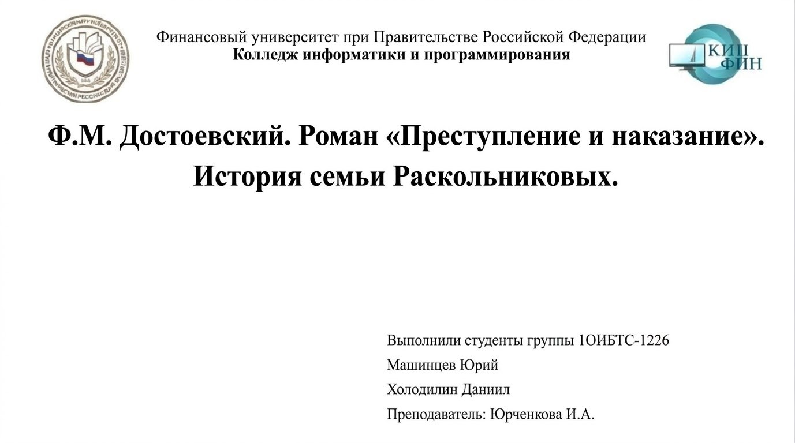
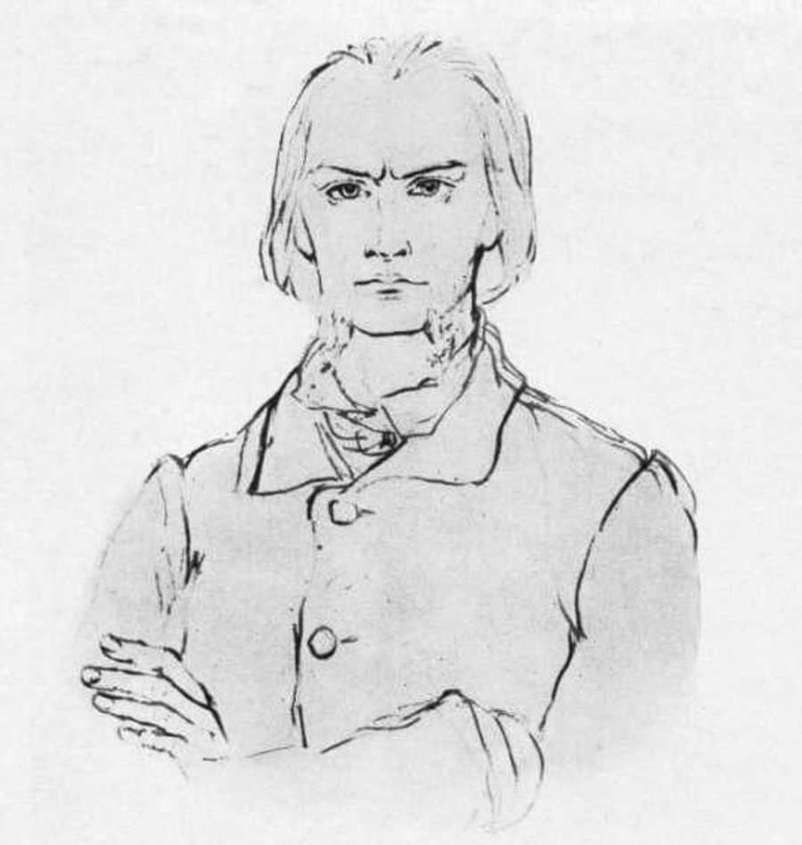
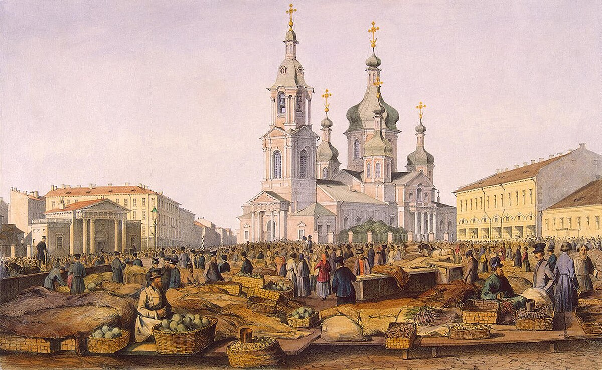
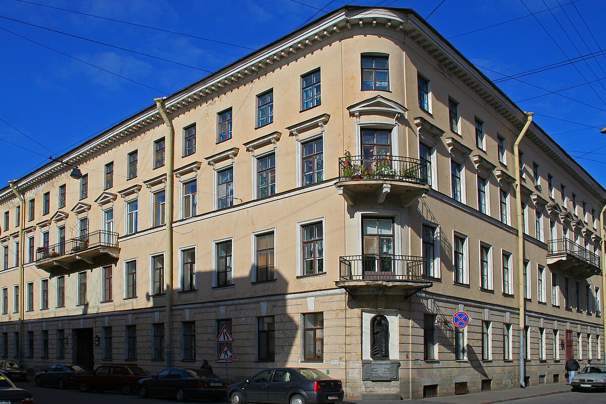
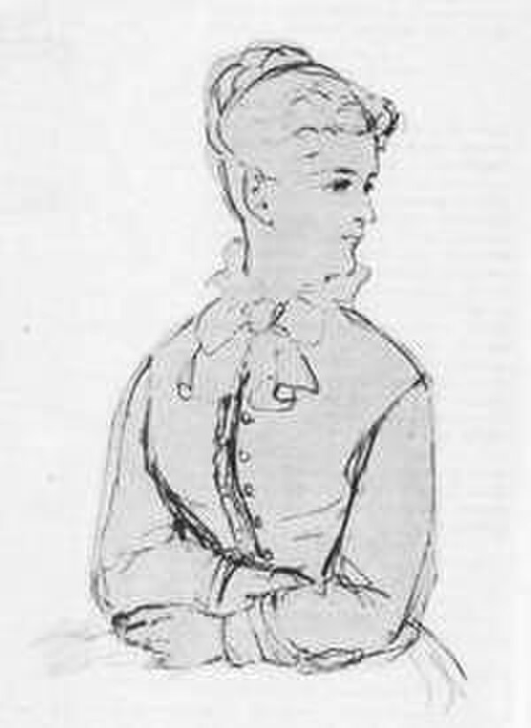
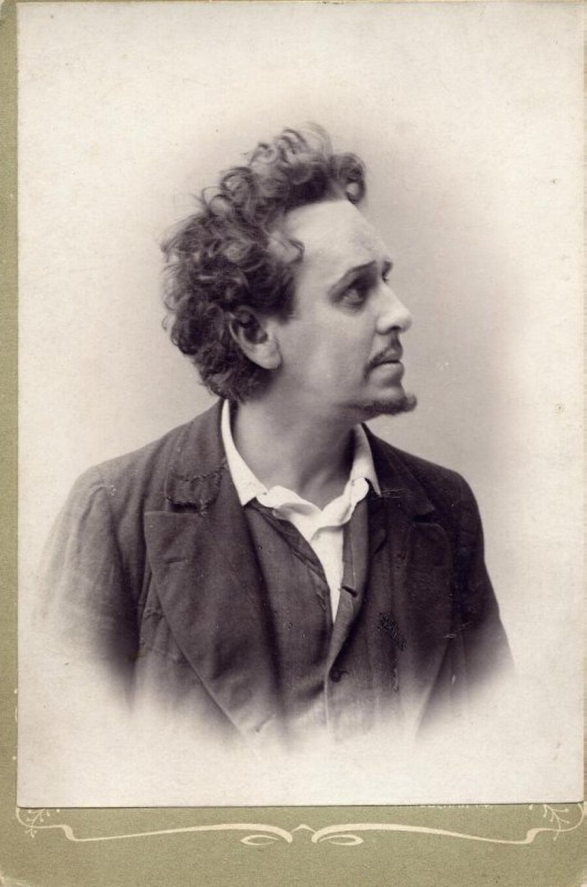
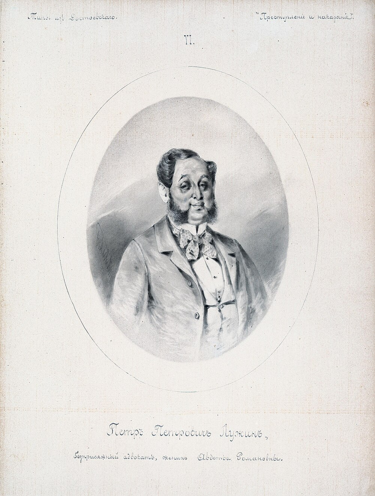
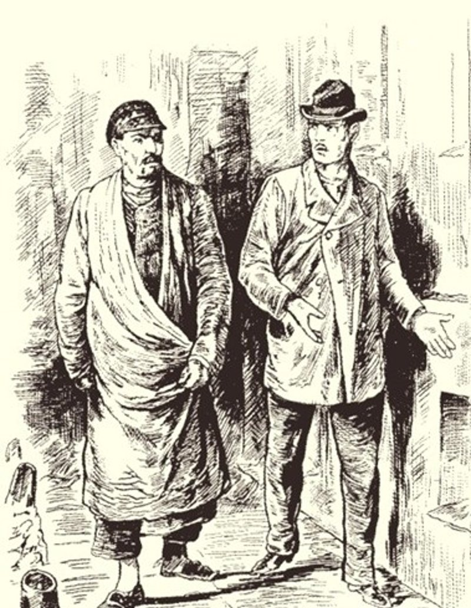
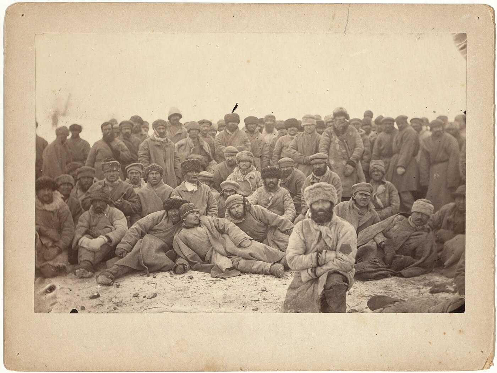
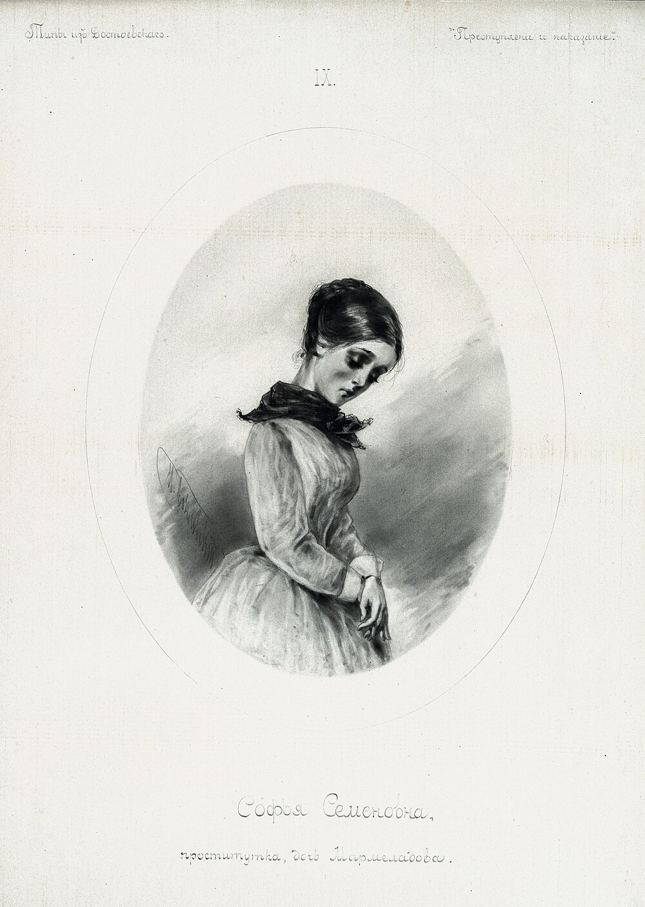

02 · Состав семьи
Их трое
К началу романа в семье Раскольниковых осталось трое: мать, сын и дочь. Отец умер раньше — он остался только в детском сне Родиона.
- Мать — Пульхерия Александровна, вдова, живёт в провинции.
- Дочь — Авдотья Романовна, Дуня, младшая сестра.
- Сын — Родион Романович, студент, живёт в Петербурге отдельно.
«Ты знаешь, как я люблю тебя; ты один у нас, у меня и у Дуни, ты наше все, вся надежда, упование наше».
Письмо Пульхерии Александровны — ч. 1, гл. 3

03 · Положение
Всё считано до рубля
Семья живёт на пенсию матери и на жалованье Дуни. Никакого состояния у них нет: денег хватает только на самое необходимое.
- Пенсия матери — сто двадцать рублей в год.
- Пятнадцать рублей она заняла у местного купца, чтобы послать сыну.
- Дуня взяла сто рублей вперёд у Свидригайловых и теперь у них в долгу.
- Отцовские часы Родион заложил за рубль пятнадцать копеек.
«Чем могла я с моими ста двадцатью рублями в год пенсиона помочь тебе?»
Письмо Пульхерии Александровны — ч. 1, гл. 3

04 · Как жили
Каморка вместо квартиры
Родион снимает комнату в пятиэтажном доме у Сенной. За неё он должен хозяйке.
- Он старается проскользнуть мимо кухни незамеченным.
- До дома процентщицы — семьсот тридцать шагов; он сосчитал их сам.
«Каморка его приходилась под самою кровлей высокого пятиэтажного дома и походила более на шкаф, чем на квартиру».
ч. 1, гл. 1

05 · Занятия
Кто чем жил
Работают в семье женщины. Мать ведёт дом и пишет письма, Дуня служит, а Родион учится — точнее, должен учиться.
- Мать: хозяйство, письма сыну, экономия на всём.
- Дуня: место гувернантки у Свидригайловых, сто рублей взяты вперёд.
- Родион: студент; живёт закладами вещей и деньгами матери.
«Тяжело за двести рублей всю жизнь в гувернантках по губерниям шляться...»
Родион о сестре — ч. 1, гл. 4

06 · Мать и сын
Для неё он — вся надежда
Пульхерия Александровна живёт мыслью о старшем сыне. Она гордится им, ждёт его и не допускает мысли, что с ним что-то не так.
- Письмо начинается с любви и заканчивается надеждой на его будущее.
- Она уверена, что всё наладится и он вернётся в университет.
- При встрече она видит в нём прежнего мальчика и не замечает перемены.
«— Родя, милый мой, первенец ты мой, — говорила она, рыдая, — вот ты теперь такой же, как был маленький...»
ч. 6, гл. 7

07 · Сестра
Она готова заплатить собой
Дуня соглашается выйти за Лужина — человека с деньгами и связями. Брак задуман ради брата: Лужин должен помочь ему в карьере.
- Перед решением она всю ночь не спала и молилась, а утром объявила о согласии.
- На разговоры о жертве отвечает, что выходит замуж для себя.
- Родион эту жертву не принимает и требует отказать жениху.
«Не хочу я вашей жертвы, Дунечка, не хочу, мамаша! Не бывать тому, пока я жив, не бывать, не бывать! Не принимаю!»
Родион — ч. 1, гл. 4

08 · Разрыв
Он сам убирает их из своей жизни
Мать и сестра приезжают в Петербург, а Родион просит их уйти и не искать с ним встреч. Он любит их и не выносит их присутствия.
- Он требует: «Оставьте меня! Оставьте меня одного!»
- В мыслях он злится на них и называет это ненавистью.
- О преступлении матери он не говорит ничего — ни до признания, ни после.
«...нам лучше бы на некоторое время разойтись. Я себя нехорошо чувствую, я не спокоен... Оставьте меня! Оставьте меня одного!»
ч. 4, гл. 3

09 · После преступления
Кого он потерял
Преступление ударило по семье не меньше, чем по нему. Каждый заплатил свою часть — и никто не остался прежним.
- Мать заболевает, пока идёт суд, и через две недели умирает.
- Дуня через два месяца выходит за Разумихина и берёт заботы о брате на себя.
- Родион идёт на каторгу; рядом с ним — Соня, чужая ему по крови.
«После тревожного дня, проведенного в беспрерывных фантазиях, в радостных грезах и слезах, в ночь она заболела и наутро была уже в жару и в бреду. Открылась горячка. Через две недели она умерла».
Эпилог I

10 · Вывод
Семья настоящая — и всё-таки не спасла
Что держало
Мать и Дуня платят за него: деньгами, покоем, своей судьбой. По чувству это настоящая семья.
Где разрыв
Жертву он не принимает и взамен не даёт ничего: молчание, ложь, требование оставить его одного.
Что выросло
Любовь близких стала долгом, который не отдать, и озлоблением. Теория «право имею» удобна тому, кто не хочет быть никому должен.
Семья дала Родиону веру в собственную исключительность и не дала человека, с которым можно говорить прямо. Первым таким человеком стала Соня — чужая.
Цитаты — по тексту романа (ч. 1, гл. 1, 3, 4; ч. 3, гл. 3; ч. 4, гл. 3; ч. 6, гл. 7; эпилог I). Иллюстрации — П. М. Боклевский, В. Порфирьев; фото — общественное достояние, кроме снимка дома (A. Savin, CC BY-SA 3.0).